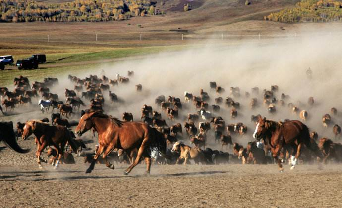
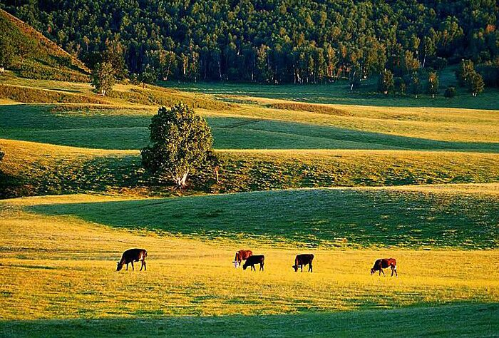

红山军马场属北京军区，建于1964年8月，主要担负边防部队军马供应保障任务。马场位于内蒙古赤峰市克什克腾旗（世界地质公园）西南端的乌兰布统古战场核心区（乌兰布统为蒙语，汉语的意思为红色的坛形山，实指大、小红山，红山军马场由此而得名）。南与河北省赛罕坝机械林场接壤，北与浑善达克沙漠为邻，总面积 41.3 万亩。北距克什克腾旗 110 公里 ，南距围场县105 公里 ，距承德230 公里 ，距北京 468 公里 。 四十多年来，红山军马场向部队输送了15000余匹军马。 2002年，红山军马场先后被全国绿化委、国家林业局和全军环绿委确定为“全国草原生态保护示范教育基地”和“全军生态环境保护示范教育基地”。（1991年，国务院审定公布为国家级重点风景名胜区，属世界遗产单位避暑山庄外八庙风景名胜区的一个分景区
夹皮沟风景区是红山军马场植被最好的区域之一，这里长满了黄花，黄花一般把花称为黄花，把花蕾称为金针，也有有称金针黄花、金针菜，是马场的特产之一。 中文名 红山军马场夹皮沟风景区 外文名 The Hongshan Jun Machang Jiapigou Valley Scenic Area 特产 金针黄花、金针菜 相关 《林海雪原》 建场初期，由于冬季雪比较大，且须经过一条窄窄的沟方能到达，酷似电影《林海雪原》中夹皮沟的场景，从此场职工就把这里称为夹皮沟。 夹皮沟草深林茂，水草丰美。这里有白桦，有沼泽地，有遍布草地、山坡的蘑菇圈，有野山楂树、山葡萄树和山丁树，有野玫瑰。百花坡、金莲甸子和小野鸭湖都在这个区域内。 黄花喜光、喜水、耐凉、抗寒力强，和要生长在土质肥沃的向阳坡面或草原及疏灌丛中，适宜生长于水草肥美、昼夜温差大、无霜期短的地方，马场的气候、土质地适合黄花的生长，生长的黄花，花大艳黄，品质上乘。 黄花可荤可素，可凉可热，别具风味，还可做成金针缺罐头，其味道独特，是色、香味俱佳的上等到菜肴。其营养价值极为丰富，并含有钙、磷、铁及人体所需的多种微量元素。还可做药用，具有健胃、利尿、通乳、消炎等功效。[1]